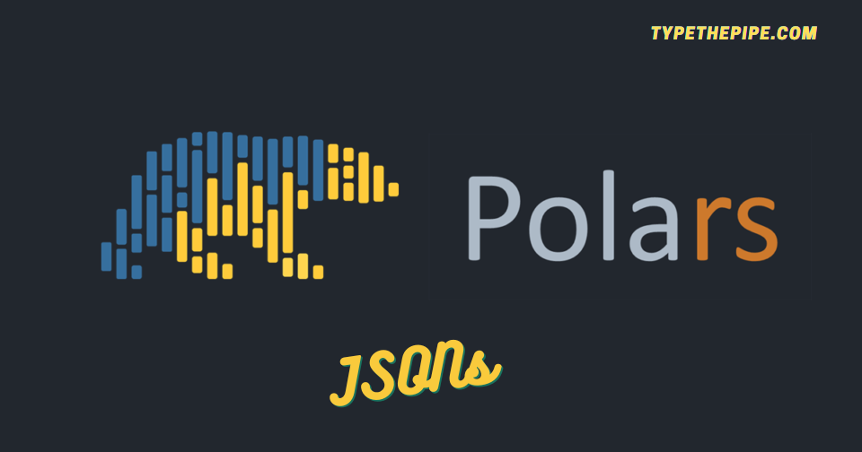

As you may know, the JSON format comes in handy for various programming tasks, ranging from configuration files to storing model weights and parameters, making it a versatile choice. With Polars, you can effortlessly load, manipulate, and write JSON files, streamlining your data handling processes.
JSON (JavaScript Object Notation) is a user-friendly data format, known for its simplicity and readability, making it perfect for a variety of applications. Its versatility and compatibility with numerous programming languages make it a powerhouse for modern data representation and exchange.
Among the dynamic world of data manipulation and analysis, there is a Python library that’s shaking things up: it is the already treated in TypeThePipe, Polars. While data processing is frequently associated with the Pandas library, Polars emerges as a star, boasting lightning-fast performance and a rich set of features. What sets Polars apart is it ability to handle JSON data, making it an indispensable asset for individuals working with intricate and ever-changing data structures. In this blog post, we’re about to unravel the wonders of JSON manipulation and reveal how this library has the power to serialize / deserialize JSON DataFrames, LazyDataFrames and Expresions.
Polars read_json method is a practical tool for working with JSON data. It allows you to easily import JSON data and convert it into a structured DataFrame or LazyDataFrame, simplifying the process of data analysis.
Also, you can add schema and schema override function parameters. Even if you’re dealing with complex or straightforward JSON structures, this method efficiently handles the conversion, saving you time and effort. It’s a useful feature making data manipulation more reliable and robust.
import json
config_json = {
"model_type": "regression",
"model_reg_vars": {
"price": "continuous",
"zip_range": "categorical"
},
"model_dep_var": {
"y": "categorical"
},
"model_version_tag": 1.19
}
with open('data.json', 'w', encoding='utf-8') as f:
json.dump(config_json, f, indent=2)import polars as pl
df_from_json = (
pl.read_json("data.json",
schema={
'model_type': pl.Utf8,
'model_reg_vars': pl.Struct([pl.Field('price', pl.Utf8), pl.Field('zip_range', pl.Utf8)]),
'model_dep_var': pl.Struct([pl.Field('y', pl.Utf8)]),
'model_version_tag': pl.Float64
}
)
)## {'model_type': Utf8, 'model_reg_vars': Struct([Field('price', Utf8), Field('zip_range', Utf8)]), 'model_dep_var': Struct([Field('y', Utf8)]), 'model_version_tag': Float64}Several strategies can be taken for unnesting JSON fields from a POlars DataFrame. First one one can rename_fields as Struct method.
model_reg_col_name = "model_reg_vars"
struct_names = [f'{model_reg_col_name}_{i}' for i in df_from_json[model_reg_col_name].struct.fields]
(
df_from_json
.select(pl.col(model_reg_col_name).struct.rename_fields(struct_names))
.unnest(model_reg_col_name)
)| model_reg_vars_price | model_reg_vars_zip_range |
|---|---|
| str | str |
| "continuous" | "categorical" |
Another way if you have few nested fields and know their name, you can simply use select() and access them by struct.field()
df_from_json.select(
pl.all().exclude("model_reg_vars"),
pl.col("model_reg_vars").struct.field("zip_range"),
pl.col("model_reg_vars").struct.field("price")
)| model_type | model_dep_var | model_version_tag | zip_range | price |
|---|---|---|---|---|
| str | struct[1] | f64 | str | str |
| "regression" | {"categorical"} | 1.19 | "categorical" | "continuous" |
Unnesting several struct columns in Polars is a task that often arises when dealing with complex and nested data. Polars provides a convenient way to do this by using the unnest method on multiple struct columns simultaneously. This operation essentially “flattens” the nested structures, making the data more accessible for analysis and manipulation. By specifying the column names that need to be unnested, you can efficiently work with the data contained within those structures, simplifying your data processing tasks in Polars.
| model_type | price | zip_range | y | model_version_tag |
|---|---|---|---|---|
| str | str | str | str | f64 |
| "regression" | "continuous" | "categorical" | "categorical" | 1.19 |
This is cool as long as the nested fields names don’t collide. If so, unnest function is expected to fail.
A hacky way to do it avoiding duplicated columns errors are this one proposed in SO question response. It is quite hacker because you should monkey patch Polars DataFrame unnest function. Doing it without a clear strategy, could lead to inconsistencies across your project code.
def unnest(self, columns, *more_columns, prefix=None, suffix=None, col_prefix=False, col_suffix=False, drop_existing=False):
if isinstance(columns, str):
columns = [columns]
if more_columns:
columns = list(columns)
columns.extend(more_columns)
#check to see if any new parameters are used, if not just return as is current behavior
if drop_existing==False and not (prefix or suffix or col_prefix or col_suffix):
return self._from_pydf(self._df.unnest(columns))
final_prefix=""
final_suffix=""
for col in columns:
if col_prefix:
final_prefix=col+"_"+prefix if prefix else col+"_"
if col_suffix:
final_suffix="_"+col+suffix if suffix else "_"+col
tempdf = self[0].select(col)
innercols = tempdf._from_pydf(tempdf._df.unnest([col])).columns
newcols = [final_prefix+innercol+final_suffix for innercol in innercols]
self = (
self
.with_columns(pl.col(col).struct.rename_fields(newcols))
.drop([drop_col for drop_col in newcols if drop_col in self.columns])
)
return self._from_pydf(self._df.unnest(columns))
pl.DataFrame.unnest=unnestThis way, you can add programmatically column suffix, as an equivalent of what we have seen in the previous section.
| model_type | price_model_reg_vars | zip_range_model_reg_vars | y_model_dep_var | model_version_tag |
|---|---|---|---|---|
| str | str | str | str | f64 |
| "regression" | "continuous" | "categorical" | "categorical" | 1.19 |
## '{"columns":[{"name":"model_type","datatype":"Utf8","values":["regression"]},{"name":"model_reg_vars","datatype":{"Struct":[{"name":"price","dtype":"Utf8"},{"name":"zip_range","dtype":"Utf8"}]},"values":[{"name":"price","datatype":"Utf8","values":["continuous"]},{"name":"zip_range","datatype":"Utf8","values":["categorical"]}]},{"name":"model_dep_var","datatype":{"Struct":[{"name":"y","dtype":"Utf8"}]},"values":[{"name":"y","datatype":"Utf8","values":["categorical"]}]},{"name":"model_version_tag","datatype":"Float64","values":[1.19]}]}'## '[{"model_type":"regression","model_reg_vars":{"price":"continuous","zip_range":"categorical"},"model_dep_var":{"y":"categorical"},"model_version_tag":1.19}]'But what about serializing not Polars DataFrames but Polars expressions. It is also possible!
Starting from polars >= 0.18.1, it is possible to serialize / deserialize an expression to make it work as follow:
json_cond_select1 = pl.col('model_type').alias('ml_model_category').meta.write_json()
json_cond_select2 = pl.col('model_version_tag').meta.write_json()
json_cond_filter1 = (pl.col('model_version_tag') == 1.19).meta.write_json()The expressions are serializable individually, and the whole expr_config is also serializable.
expr_config = {
'select': [
pl.Expr.from_json(json_cond_select1),
pl.Expr.from_json(json_cond_select2),
],
'filters': [
pl.Expr.from_json(json_cond_filter1),
]
}
(
pl.read_json("data.json")
.filter(pl.all_horizontal(expr_config["filters"]))
.select(expr_config["select"])
).lazy().write_json()## '{"DataFrameScan":{"df":{"columns":[{"name":"ml_model_category","datatype":"Utf8","values":["regression"]},{"name":"model_version_tag","datatype":"Float64","values":[1.19]}]},"schema":{"inner":{"ml_model_category":"Utf8","model_version_tag":"Float64"}},"output_schema":null,"projection":null,"selection":null}}'Hopefully, this post has helped you become familiar with Polars JSON serialization and usage and allowed you to enjoy a showcase of some of its features.
If you want to stay updated…